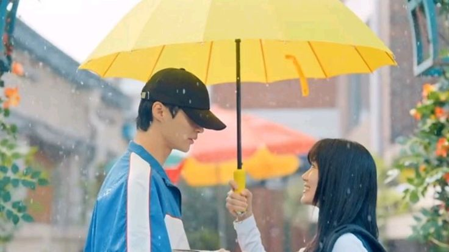

Un Kdrama es una serie de televisión originaria de Corea del Sur, caracterizada por su producción de alta calidad, tramas emocionantes y actores talentosos. Los Kdramas abarcan diversos géneros, como romance, comedia, thriller, y fantasía.
Los Kdramas (dramas coreanos) tienen varias características que los distinguen de las series comunes o de otros tipos de producciones televisivas, ya sea occidentales o de otras regiones. A continuación te detallo algunas de las diferencias más destacadas:
(Lovely Runner 2024)
(Alquimia de almas 2022)
"Aterrizaje de emergencia en tu corazón" (Crash Landing on You) es una serie de televisión surcoreana que combina romance, drama y comedia. Se emitió desde el 14 de diciembre de 2019 hasta el 16 de febrero de 2020 en la cadena tvN y está disponible internacionalmente en Netflix.
La trama sigue a Yoon Se-ri, una exitosa heredera surcoreana de un conglomerado empresarial, quien sufre un accidente de parapente que la lleva a aterrizar en Corea del Norte. Allí, conoce a Ri Jung-hyuk, un oficial del ejército norcoreano que intenta protegerla y ayudarla a regresar a su país, mientras ambos desarrollan sentimientos el uno por el otro.
"Aterrizaje de emergencia en tu corazón" es un K-drama que no solo captura el corazón con una historia de amor improbable, sino que también ofrece una mezcla perfecta de comedia, drama y emoción. La química entre los protagonistas, Hyun Bin y Son Ye-jin, es innegable, y sus personajes se desarrollan de una manera profunda y conmovedora. La serie aborda temas como el amor entre dos mundos completamente diferentes, el sacrificio personal y el poder de la lealtad, todo mientras se desarrolla en un contexto geopolítico tenso. Además, el elenco secundario proporciona momentos divertidos y entrañables, equilibrando el tono más serio con la ligereza de la comedia. Uno de los mayores puntos fuertes es la ambientación, con hermosos paisajes de Corea del Sur y el entorno opresivo de Corea del Norte, lo que le da una atmósfera única a la historia. La dirección y la producción son de alta calidad, con una narrativa bien escrita que mantiene al espectador cautivado desde el principio hasta el final.
Sin duda es mi kdrama favorito y para mi es 10/10
Ver en NetflixStart Up es un Kdrama que sigue la vida de una joven emprendedora llamada Seo Dal-mi, quien sueña con crear su propia empresa de tecnología, inspirada por su madre que fue una exitosa empresaria. El drama se centra en la competencia y los desafíos que enfrenta Dal-mi, mientras se une a una incubadora de startups, donde conoce a Nam Do-san, un brillante programador, y Han Ji-pyeong, un inversionista exitoso con un pasado relacionado con Dal-mi.
Start Up es una serie cautivadora que combina de manera efectiva el mundo de la tecnología y los emprendimientos con una historia de amor fresca y atractiva. La trama es intrigante no solo por el desarrollo profesional de los personajes, sino también por las relaciones personales que se forman entre ellos, con un triángulo amoroso que mantiene la tensión durante toda la serie. Lo más destacado de Start Up es el viaje emocional de sus personajes principales, quienes, a pesar de sus diferencias, tienen sueños similares de superación personal y profesional. Las actuaciones, especialmente las de Bae Suzy y Nam Joo Hyuk, son admirables y aportan una gran química en pantalla. Además, la serie presenta un fuerte mensaje de perseverancia, trabajo en equipo y crecimiento personal, lo cual es inspirador para cualquier espectador.
Sin duda es mi segundo kdrama favorito y para mi es 10/10
Ver en NetflixEl hada de las pesas Kim Bok-joo es una historia que sigue a Kim Bok-joo (interpretada por Lee Sung-kyung), una joven atleta de levantamiento de pesas que se enfrenta a las expectativas de su familia y su propia lucha por encontrar su lugar en el mundo del deporte. A pesar de ser fuerte físicamente, Kim Bok-joo es sensible y vulnerable emocionalmente, especialmente cuando se trata de su primer amor, que surge inesperadamente con un compañero de universidad, Jung Joon-hyung (interpretado por Nam Joo-hyuk), un nadador que tiene su propia carga emocional. La serie explora temas de crecimiento personal, amistad y el amor en un entorno competitivo.
El Hada de las Pesas es una de esas series que combina una historia ligera, personajes entrañables y un mensaje inspirador. El desarrollo de la relación entre Kim Bok-joo y Jung Joon-hyung es uno de los puntos más destacados, pues no solo es romántica, sino que también trata temas de superación personal, confianza y la importancia de ser uno mismo. A través de sus personajes, la serie aborda la presión social que enfrentan los jóvenes atletas y cómo la vida universitaria puede ser un desafío tanto profesional como emocionalmente. La química entre Lee Sung-kyung y Nam Joo-hyuk es una de las principales razones por las que la serie se vuelve tan atractiva, y aunque es una historia predecible en algunos aspectos, lo hace de manera entrañable, con momentos de risa, ternura y tensión. La serie también tiene una buena dosis de humor, especialmente con los personajes secundarios que añaden frescura y carisma a la trama.
Sin duda es mi tercer kdrama favorito y para mi es 10/10
Ver en Viki